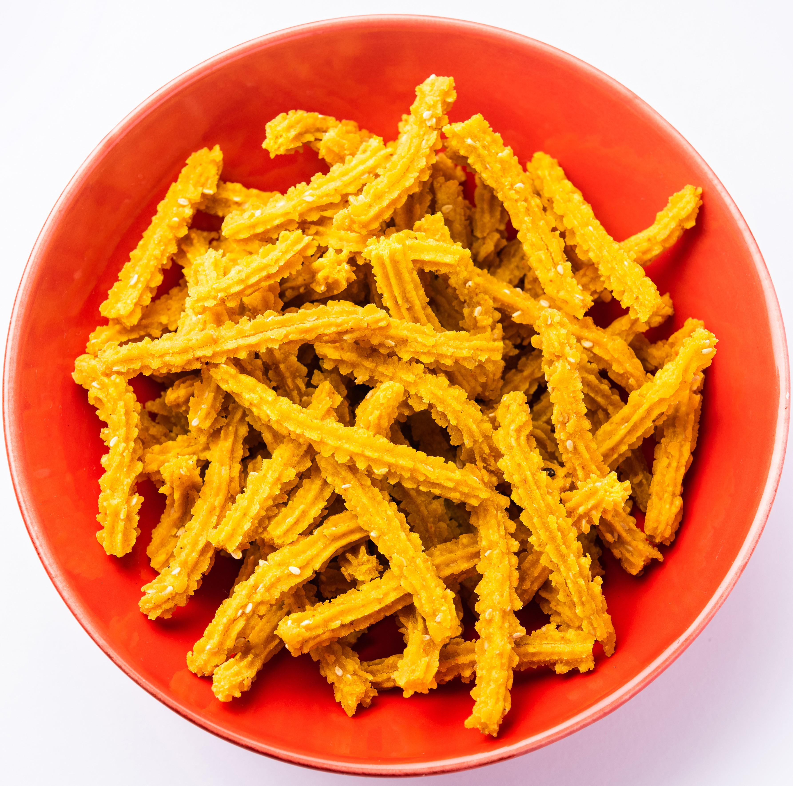
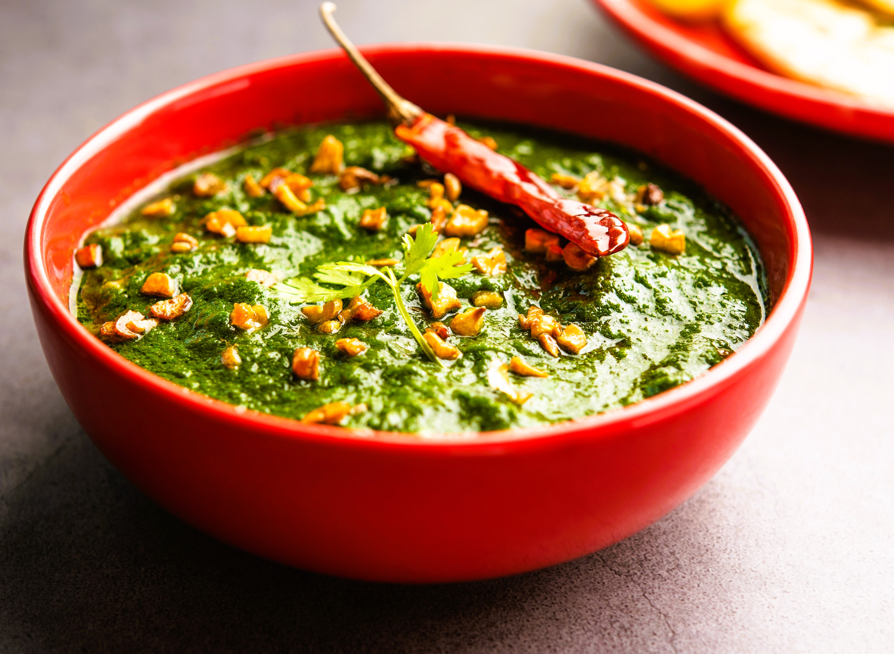

Famous Foods of Haryana
Bhutte Ka Kees

Bhutte Ka Kees Recipe:
- Ingredients:
- 4 cups grated corn
- 1 tablespoon ghee
- 1 teaspoon cumin seeds
- 1/2 teaspoon mustard seeds
- 1 green chili, finely chopped
- 1/2 teaspoon turmeric powder
- 1/2 teaspoon red chili powder
- 1/4 cup milk
- Salt to taste
- Instructions:
- Heat ghee in a pan and add cumin and mustard seeds.
- Once they splutter, add chopped green chili.
- Add grated corn and stir well.
- Add turmeric powder, red chili powder, and salt.
- Add milk and cook until the mixture thickens.
- Serve hot with roti or paratha.
Hara Dhania Chaas

Hara Dhania Chaas Recipe:
- Ingredients:
- 2 cups yogurt
- 1 cup water
- 1/2 cup coriander leaves, chopped
- 1 green chili, chopped
- 1/2 teaspoon roasted cumin powder
- Salt to taste
- Fresh coriander for garnish
- Instructions:
- Whisk yogurt and water together until smooth.
- Add chopped coriander leaves, green chili, roasted cumin powder, and salt.
- Mix well and chill before serving.
- Garnish with fresh coriander before serving.
Kachri Ki Chutney

Kachri Ki Chutney Recipe:
- Ingredients:
- 200 grams kachri (wild melon), peeled and chopped
- 1 tablespoon oil
- 1 teaspoon mustard seeds
- 1/2 teaspoon cumin seeds
- 1/2 teaspoon turmeric powder
- 1/2 teaspoon red chili powder
- 1 tablespoon jaggery, grated
- Salt to taste
- Instructions:
- Heat oil in a pan and add mustard and cumin seeds.
- Once they splutter, add chopped kachri.
- Add turmeric powder, red chili powder, and salt.
- Cook until kachri is tender.
- Add jaggery and mix well.
- Serve as a side with main dishes.